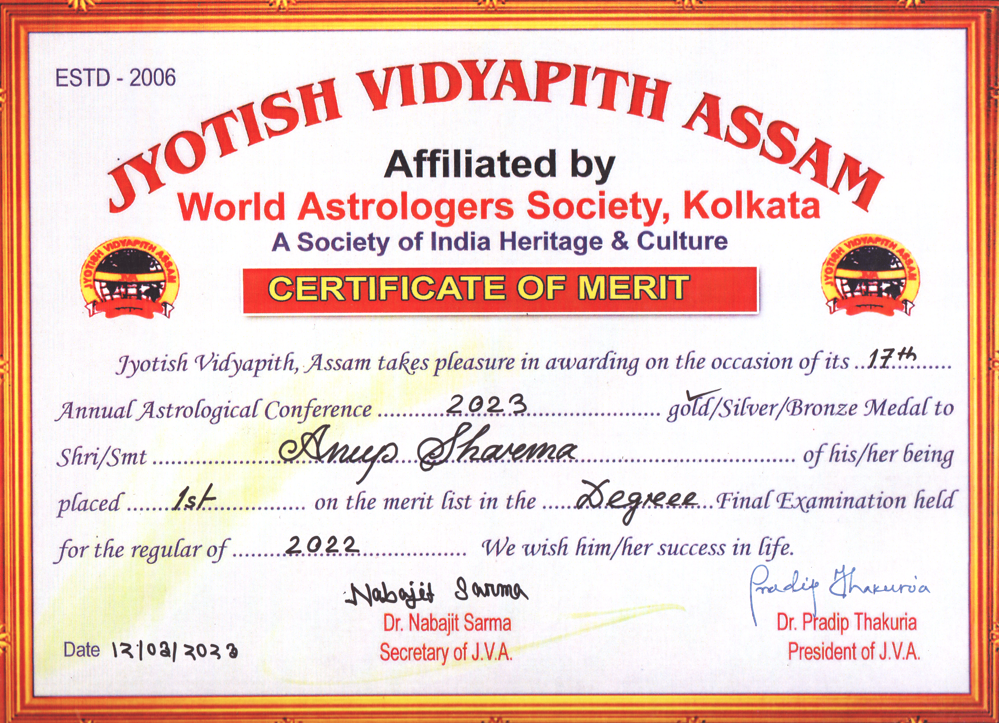
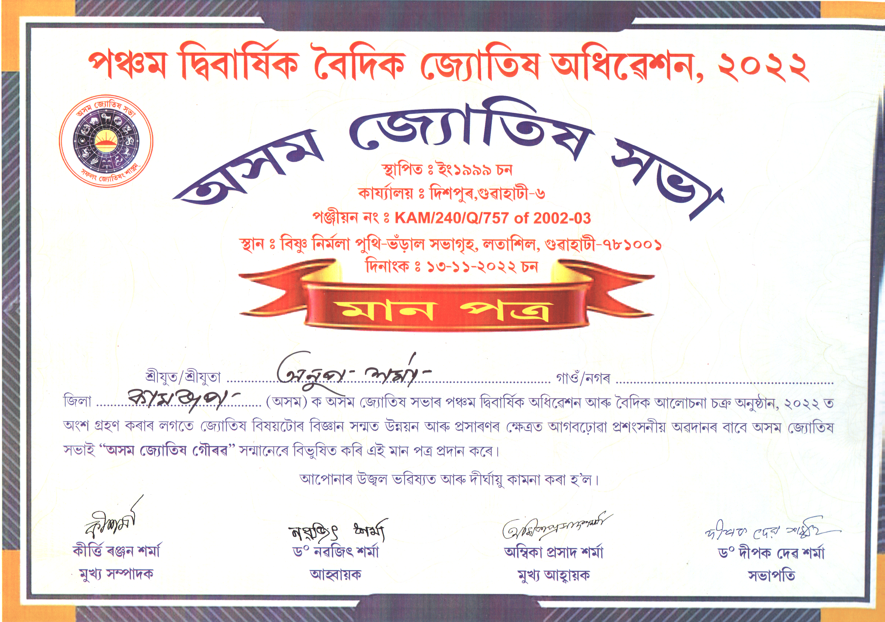
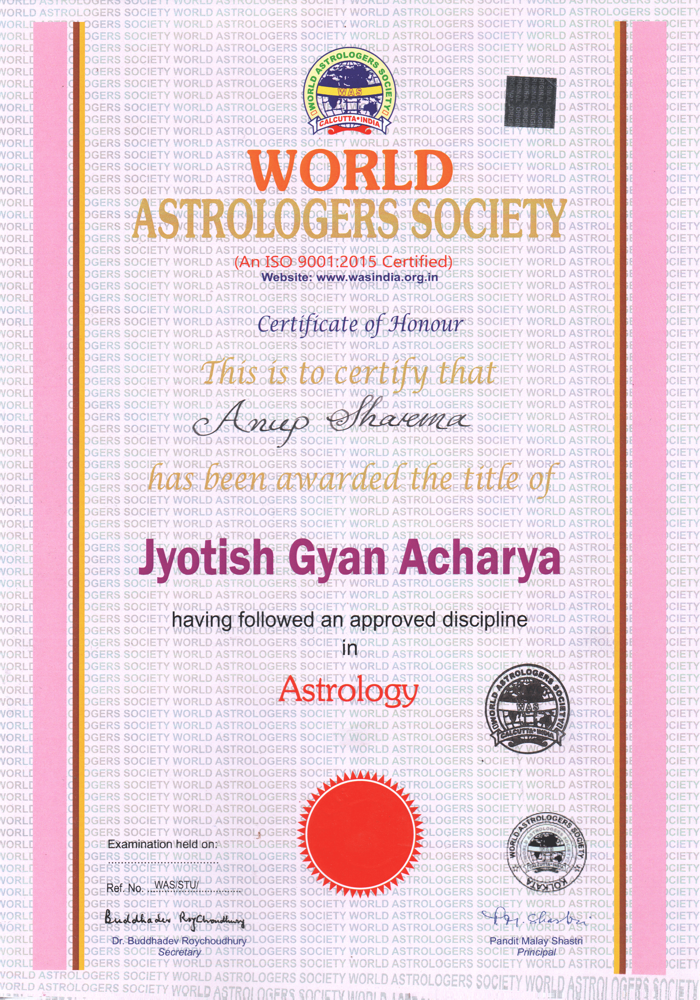
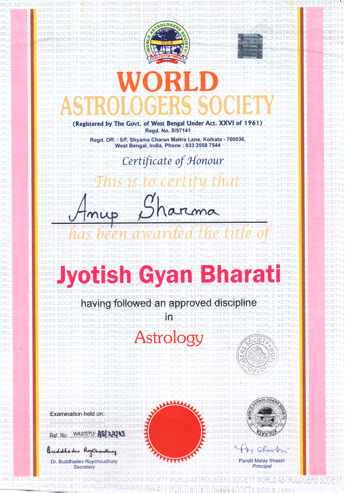
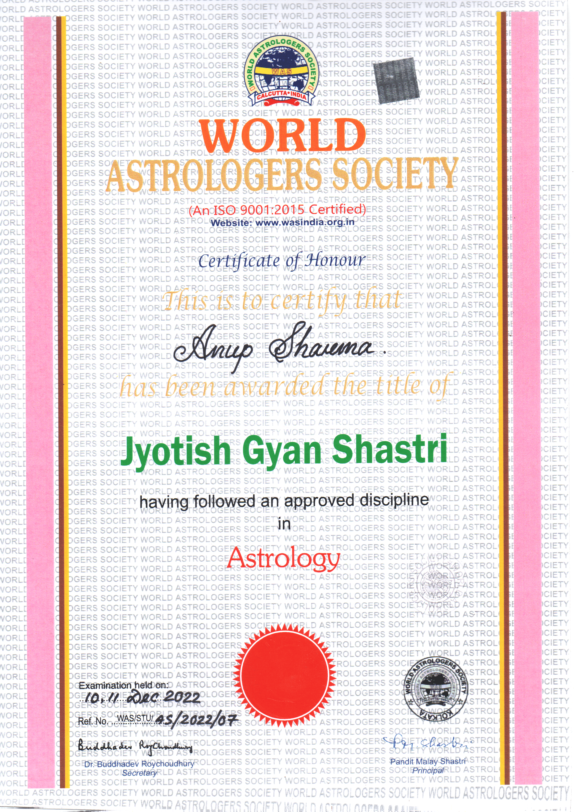
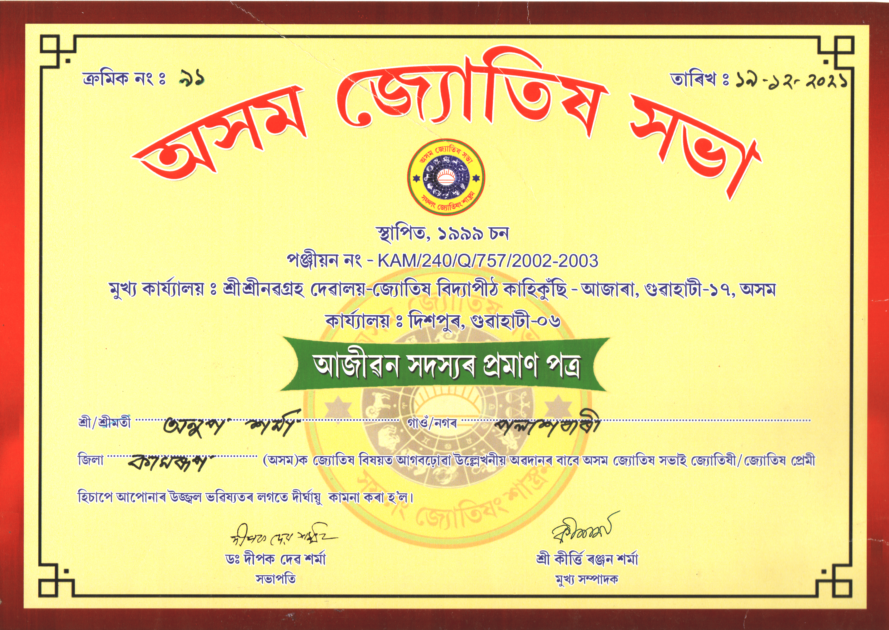

শ্ৰী শ্ৰী নৱগ্ৰহ জ্যোতিষ কেন্দ্ৰ, পলাশবাৰী
Welcome to Shri Shri Nabagraha Jyotish Kendra
Astrologer Anup Sharma
জ্যোতিষী অনুপ শৰ্মা
Gold Medalist
Jyotish Gyan Acharya | Jyotish Gyan Bharati | Jyotish Gyan Shastri
জ্যোতিষ জ্ঞান আচাৰ্য্য | জ্যোতিষ জ্ঞান ভাৰতী | জ্যোতিষ জ্ঞান শাস্ত্ৰী
Providing highly accurate predictions and remedies. Deeply rooted in the spiritual traditions of Assam, combining ancient wisdom with practical guidance to help you navigate life's challenges.
আপোনাৰ জীৱনৰ প্ৰতিটো সমস্যাৰ সঠিক সমাধানৰ ঠিকনা! বিবাহত পলম, কৰ্মক্ষেত্ৰত বাধা, ব্যৱসায়ত লোকচান নে ঘৰুৱা অশান্তি? গ্ৰহৰ দোষ নে বাস্তুৰ প্ৰভাৱ? কাৰণ যিয়েই নহওক, স্বৰ্ণপদক প্ৰাপ্ত জ্যোতিষী অনুপ শৰ্মাৰ নিৰ্ভুল পৰামৰ্শৰে জীৱনলৈ ঘূৰাই আনক শান্তি আৰু সমৃদ্ধি। সঠিক গ্ৰহ ৰত্নই সলনি কৰিব পাৰে আপোনাৰ জীৱনৰ দিশ। ১০০% বিশুদ্ধ আৰু প্ৰমাণিত গ্ৰহ ৰত্নৰ বাবে নিৰ্ভৰ কৰক শ্ৰী শ্ৰী নৱগ্ৰহ জ্যোতিষ কেন্দ্ৰৰ ওপৰত। ঘৰলৈ সুখ-শান্তি আহিব সঠিক বাস্তুৰ দ্বাৰা। ঘৰ বা ব্যৱসায়িক প্ৰতিষ্ঠানৰ বাস্তু দোষ নিবাৰণৰ বাবে আজিেই পৰামৰ্শ লওক।
Visiting Hours (চোৱা সময়):
- Evening from 6:30 PM (সন্ধিয়া ৬:৩০ বজাৰ পৰা)
- Every Sunday from 10:30 AM (প্ৰতি ৰবিবাৰে ৰাতিপুৱা ১০:৩০ বজাৰ পৰা)
Core Services: Astrology, Palmistry, Vastu, Gem Stone
কোষ্ঠী প্ৰস্তুত, কোষ্ঠী বিচাৰ, হস্তৰেখা বিচাৰ, বাস্তু বিচাৰ, গ্ৰহ ৰত্ন
Explore ServicesDegrees, Certifications & Medals





